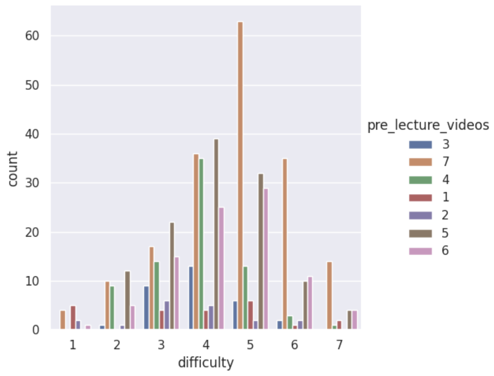
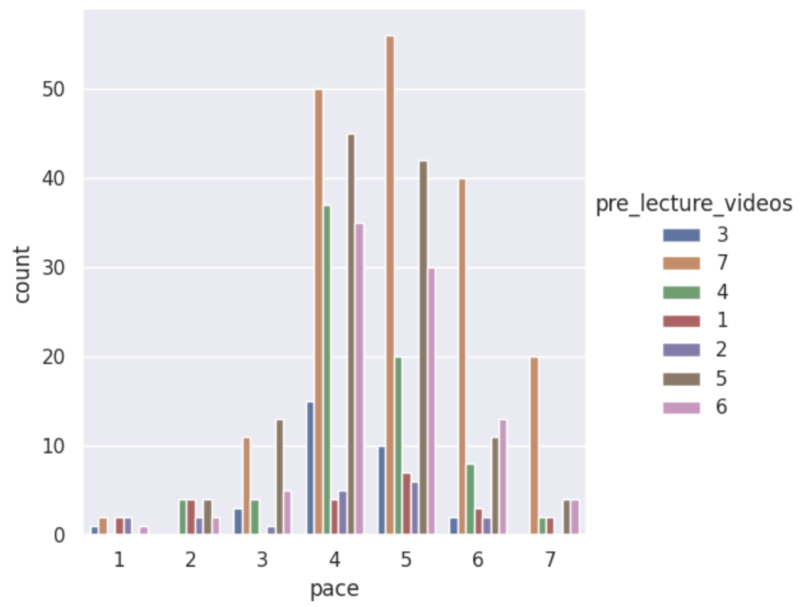
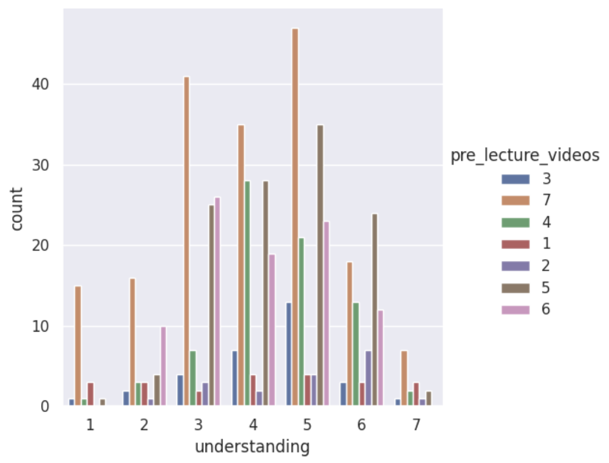

We analyzed survey data to understand how students' perception of course difficulty, pace, and understanding affects their interest in pre-lecture videos.



Overall, the data suggests that students who perceive the course as more difficult, fast-paced, or harder to understand are more likely to express interest in pre-lecture videos. Across all three factors, there is a consistent pattern indicating that higher difficulty, faster pace, and lower levels of understanding are associated with stronger demand for these resources.
Based on these findings, implementing pre-lecture videos could be an effective way to support students, particularly those who are struggling or trying to keep up with the course material. Providing these resources may help students come to class better prepared and improve their overall comprehension.
However, there are important trade-offs to consider. Creating pre-lecture videos requires additional time and effort from instructors, and not all students may use them equally. Furthermore, this analysis only captures student interest, not actual academic outcomes. Future work could examine whether pre-lecture videos lead to measurable improvements in student performance.
Overall, the results support the idea that pre-lecture videos could be a valuable addition to the course, especially for students who need additional support.